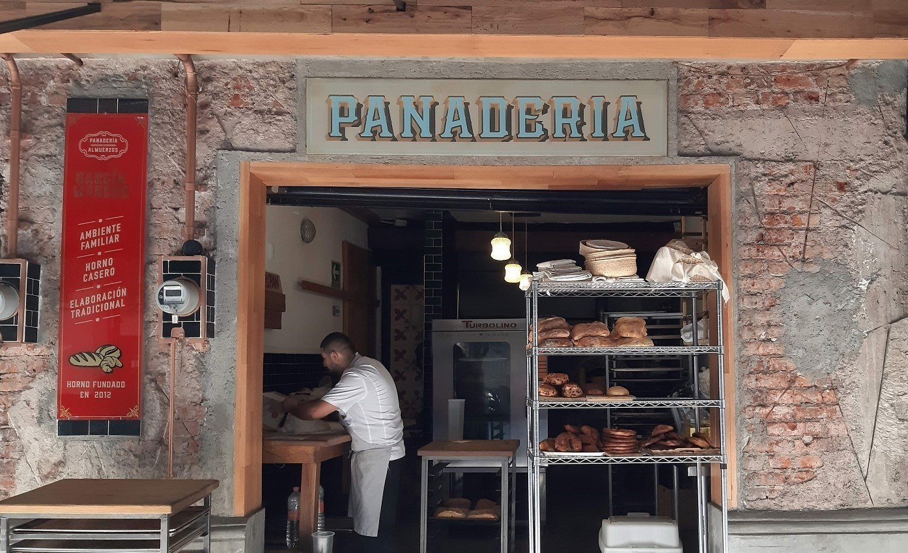
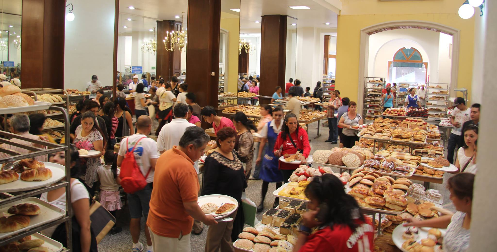

"La Desesperanza" nació de un sueño y una historia de anhelos.
Aquí creemos que cada pan tiene su propia memoria, y al compartirlo,
compartimos una parte de nosotros mismos. Te invitamos a probar lo que hacemos
con tanto esmero y a dejarte llevar por los aromas y sabores de lo que fue.

Nuestra Filosofia

En "La Desesperanza" horneamos con amor y paciencia, con la esperanza de que cada
mordida te acerque a un rincón de paz. Porque sabemos que a veces, lo único que
necesitamos es un pan suave y un momento de pausa.